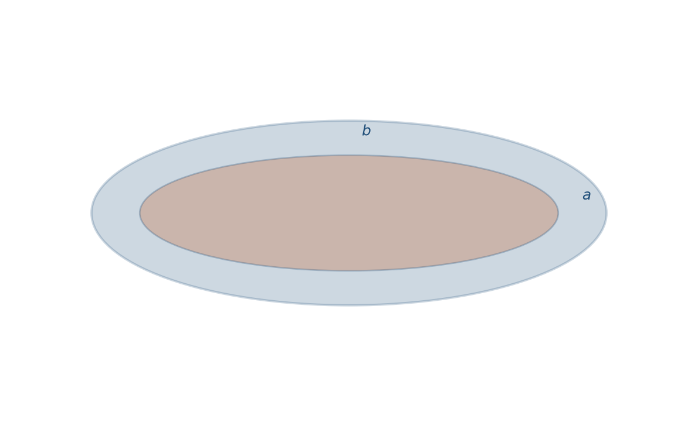
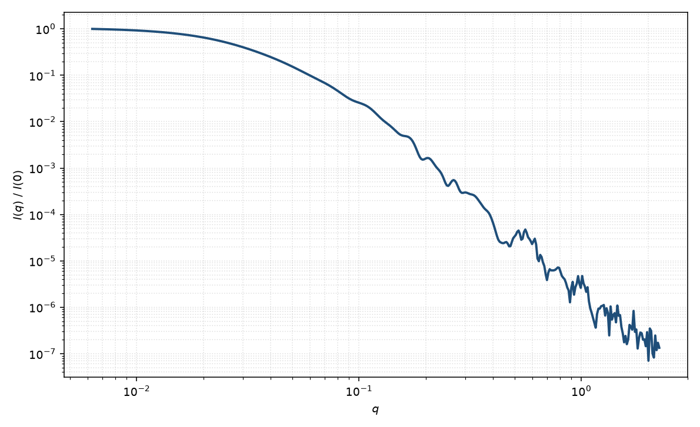

椭圆核壳双层盘
elliptical core-shell bicelle
适用场景
当双层盘的盘面不是圆而是椭圆（半轴 $a\gt b$）时，用椭圆核壳 bicelle。适用于剪切或磁场下被拉长的纳米盘、椭圆脂双层盘，以及圆盘模型系统偏高 $q$ 的截面振荡对不上的样品。
相对圆盘，粉末平均会额外抹平径向振荡，中间 $q^{-2}$ 区仍然在。轴比 $a/b$ 接近 1 时应退回圆盘，避免多余参数。
物理图像
在圆盘核壳振幅上，把径向波数换成有效半径 $R_{\mathrm{eff}}(\psi)=\sqrt{(a\cos\psi)^2+(b\sin\psi)^2}$，再对盘面方位角 $\psi$ 与法向极角 $\alpha$ 双重平均。面帽与腰带厚度仍沿法向与边缘法向度量。
二维各向异性图案中，长轴方向的条纹间距更密；粉末平均则只剩下轴比导致的阻尼。
示意图


核心公式
径向因子中的有效半径
$$R_{\mathrm{eff}}(\psi)=\sqrt{a^2\cos^2\psi+b^2\sin^2\psi},$$ $$P(q)\propto\int_0^{\pi/2}\mathrm{d}\alpha\sin\alpha\int_0^{\pi}\mathrm{d}\psi\,\bigl|A\bigl(q,\alpha,R_{\mathrm{eff}}(\psi)\bigr)\bigr|^2.$$$A$ 与圆盘核壳 bicelle 相同，只是把 $R$ 换成 $R_{\mathrm{eff}}$。厚度方向的 $\mathrm{sinc}$ 不依赖 $\psi$。
参数表
| 参数 | 符号 | 含义 | 单位 | 典型范围 |
|---|---|---|---|---|
| 长半轴 / 短半轴 | $a$, $b$ | 椭圆盘面半轴 | Å 或 nm | 20–500 Å，$a\ge b$ |
| 核厚度 | $L$ | 疏水核厚度 | Å | 20–50 Å |
| 面帽 / 腰带 | $t_{\mathrm{face}},t_{\mathrm{belt}}$ | 头基与边缘带 | Å | 5–20 Å |
| 各区 SLD | $\rho_{\mathrm{core}},\rho_{\mathrm{face}},\rho_{\mathrm{belt}}$ | 核、面、带衬度 | Å$^{-2}$ | 对比实验约束 |
| 取向角 | $\theta,\phi$ | 法向及盘面长轴方位（二维） | 度 | 剪切/磁场 |
拟合注意
轴比 $a/b$ 与半径多分散在粉末平均中几乎同为振荡变钝。没有二维各向异性或电镜轴比时，不要同时放开两者。
取向：二维需要盘法向 $\theta$ 与长轴 $\phi$；一维只报等效半径。磁性同圆盘 bicelle：通常无磁衬度；磁场取向时磁矩常沿法向，须单独磁 SLD。
相近模型
参考文献
- Guinier, A.; Fournet, G. Small-Angle Scattering of X-rays. Wiley: New York, 1955.
- Pedersen, J. S. Analysis of small-angle scattering data from colloids and polymer solutions: modeling and least-squares fitting. J. Appl. Cryst. 1997, 30, 339–354. DOI: 10.1107/S0021889897002532